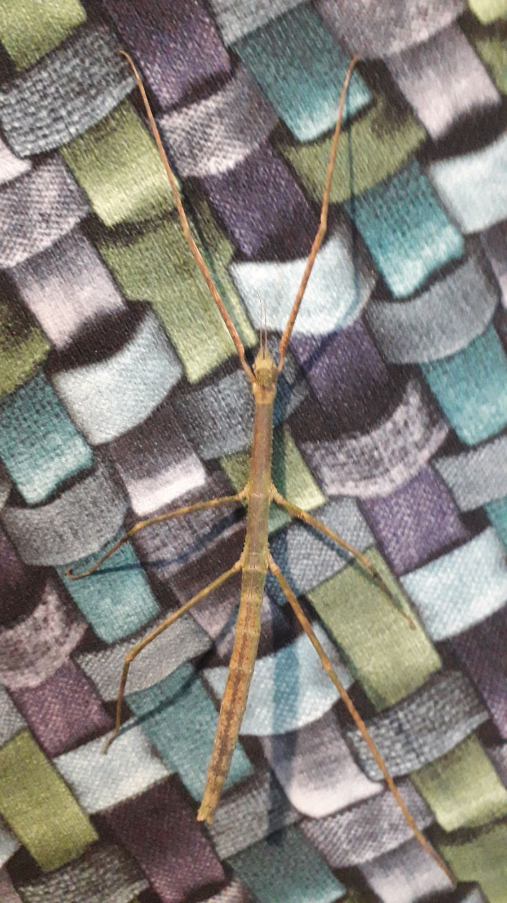
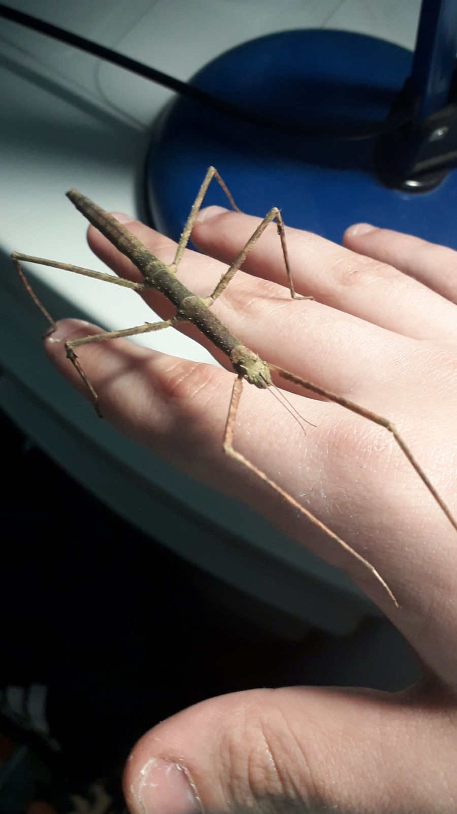
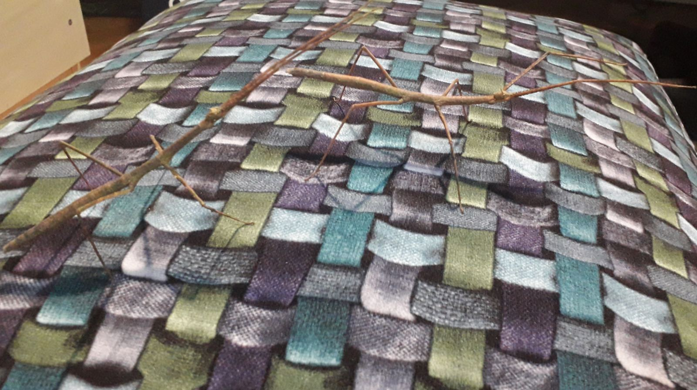
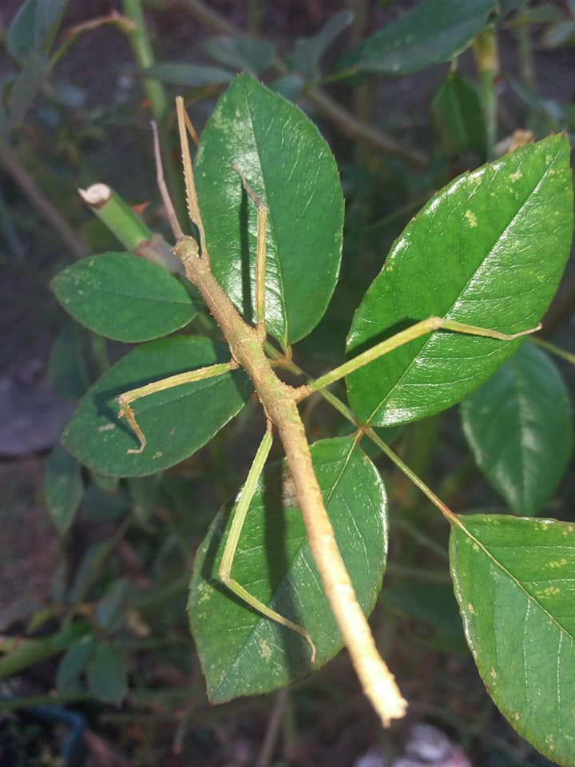
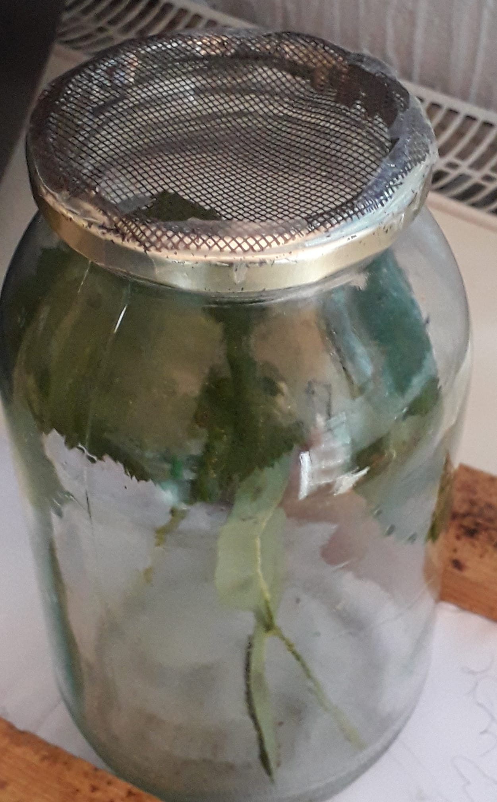
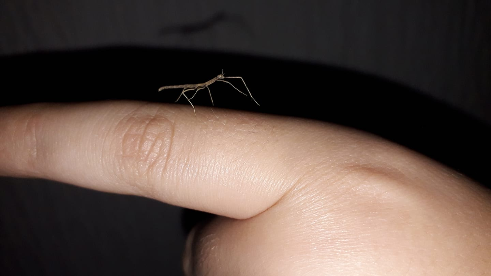

Ovo je website za prodaju vijetnamskih palicnjaka!
Informacije o cuvanju ovih ljubimaca u kratkim tezama:
-vijetnamski palicnjaci se mogu cuvati u nekoj tegli poklopljenoj gazom ili mrezicom ili u akvarijumu poklopljenim necim slicnim;
-potrebno je malo isprskati pored njih ih prokuvanom ili destilovanom vodom svake veceri;
-veoma su krhki,mogu setati po vasoj ruci, ali budite nezni prema njima;
-njihov zivotni vek traje preko godinu i po dana u idealnim uslovima.



Preodajemo ih u Nisu i u okolini Nisa
Cena jednog mladog palicnjaka je 170 rsd
Ako ste zaninteresovani pozovite neki od navedenih brojeva: 0617236699 0629674366 0655400392 0645296173
facebook stranica


